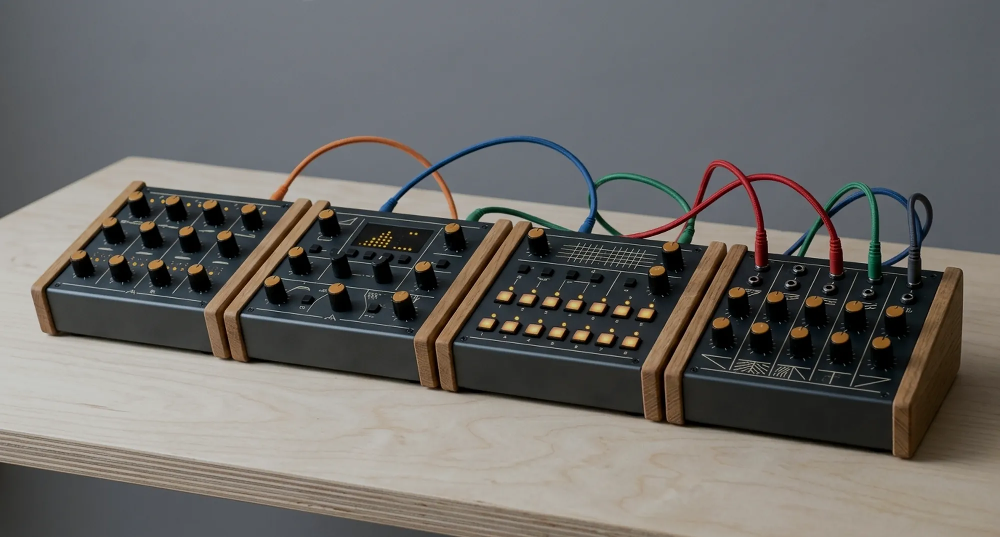
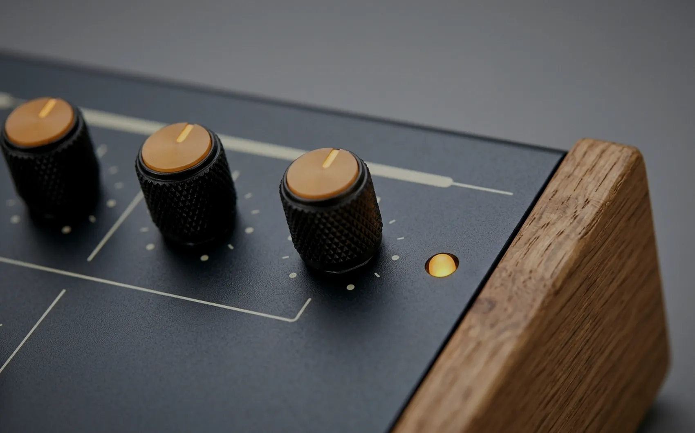

Built in small batches
Four instruments,
one voice.
Field, Tide, Dusk and North were designed together and sound like it. The one below is real — press the switch and play it. Nothing here is a recording.

Hear it, then decide
Two oscillators, a resonant lowpass, an envelope and a damped delay — running in this page.
The range
Four boxes that clock, filter and feed each other without an adapter in sight.
Take all four and the set comes down by — instead of .


Detent knobs, amber capsField, top row
The signal path
You can hear
every stage.
Most instruments ask you to take the block diagram on faith. Ours lets you stand at each point in the chain and listen — oscillators alone, then the filter, then the envelope, then the delay.
It is the fastest way to understand what a synthesiser is actually doing, and it takes about ninety seconds.
Walk the chain